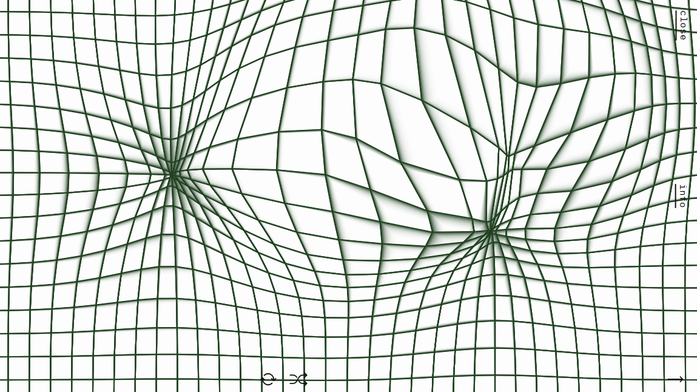
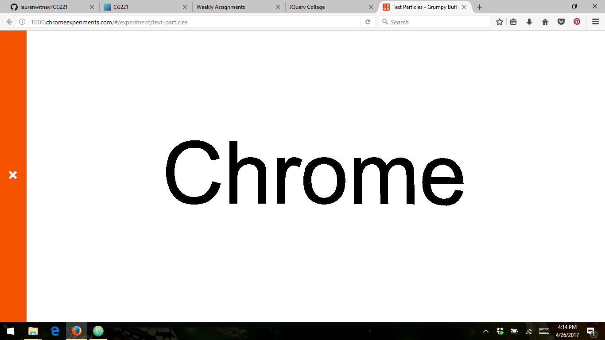
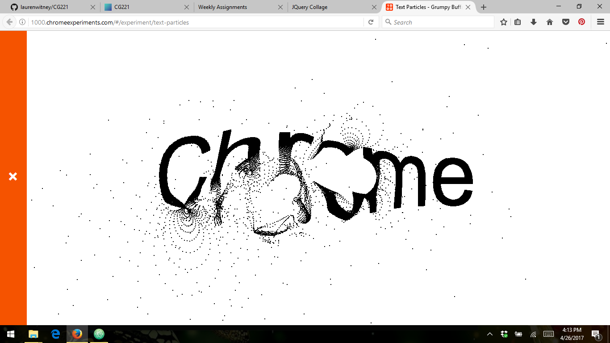

The user can change the image by moving their cursor across the page. Concave and convex shapes appear. The image is constantly moving, but can be controlled by the user. The navigation buttons on the right side are easily accessible and discreet as to not take away from the effect of the website. The button at the bottom resets the page to start new.
Text Particles allows the user to interact with the text on screen. By hovering over the text with your cursor, you can manipulate it to look like there is a bubble in the middle and disperse it into particles. When the cursor is off the text it goes back to normal.
 